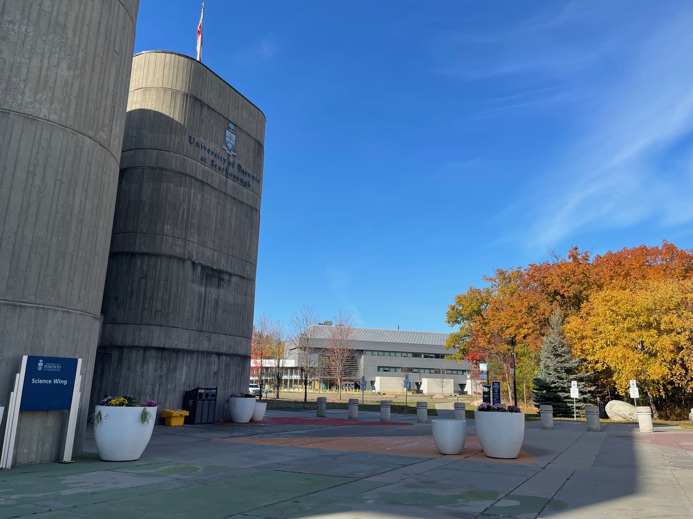
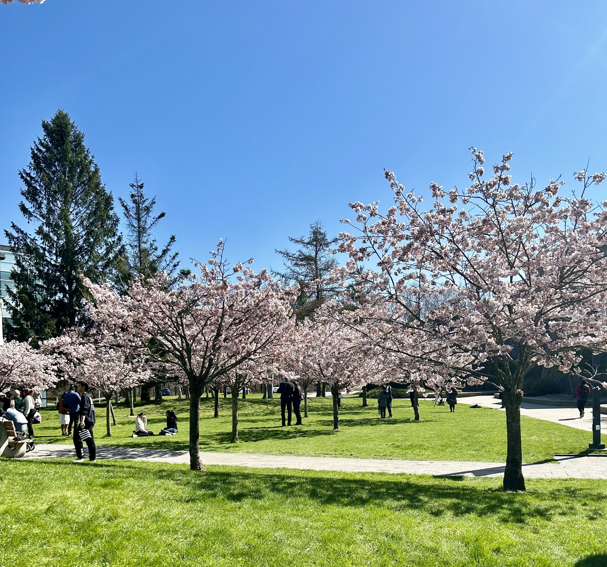
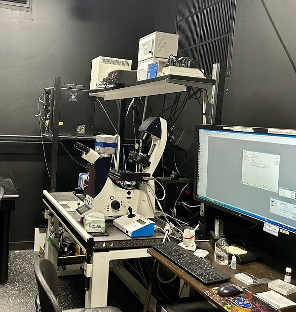
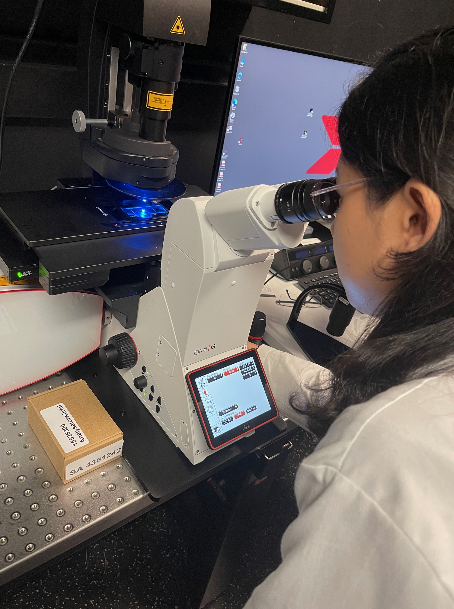

Volunteering
We welcome inquiries from students interested in volunteering. The lab typically reviews applications in February for summer opportunities and in June for fall–winter opportunities.
1 · Work with us
We welcome inquiries from motivated students and researchers interested in plant membrane signaling, lipid biology, and how plants respond to environmental change. We aim to build an inclusive and supportive research community where everyone feels respected and can grow intellectually and academically.
To get in touch, email Xue Pan with your CV and a short note about your research interests and goals.
Research environment
The Pan Lab is based in the Department of Cell and Systems Biology at the University of Toronto Scarborough (UTSC), one of the University of Toronto’s three campuses. Located in Toronto’s east end, UTSC combines a research-intensive university environment with a campus known for its green space, collaborative community, and emphasis on experiential learning.
The Department of Cell and Systems Biology offers MSc and PhD training across cell, molecular, and systems biology. Its interdisciplinary research environment spans areas including genetics, cell biology, developmental biology, proteomics, and computational biology.




Early research experience
Undergraduate students at the University of Toronto may enquire about volunteer research, paid positions, or research courses for academic credit. Students at other institutions may be eligible to apply for summer research programs such as NSERC Undergraduate Student Research Awards (USRA), ASPB-SURF, or Mitacs Globalink.
We welcome inquiries from students interested in volunteering. The lab typically reviews applications in February for summer opportunities and in June for fall–winter opportunities.
BIOB98 and BIOD98/99 provide opportunities to conduct undergraduate research for course credit. Check course requirements and contact Xue well in advance.
Eligible undergraduate students may be able to take part in paid research, usually around 9–12 hours per week. See the Career Learning Network for program details.
Competitive awards support full-time summer undergraduate research. Award duration, stipend, eligibility, and deadlines vary by program and year, so check the current official guidance. Students planning to apply are encouraged to contact Xue early for advice on preparing their applications.
The American Society of Plant Biologists’ summer research fellowship supports eligible undergraduate students pursuing plant biology research. Program dates, benefits, and eligibility should be confirmed on the official website. Contact Xue early if you are considering an application.
This program supports eligible international undergraduates from partner institutions undertaking research internships in Canada. Partner countries, application windows, and host-lab availability can change, so check current program details and contact Xue to ask whether the lab is able to host a student in the relevant year.
Please read the program criteria carefully to confirm your eligibility, then email Xue with:
MSc and PhD training
The Pan Lab is part of the Department of Cell and Systems Biology (CSB), which offers MSc and PhD programs. Admission requires a faculty member who agrees to supervise and fund the student’s research, so prospective students should contact Xue in advance to discuss research fit and potential opportunities.
Application procedures, deadlines, and eligibility requirements are set by the department and the University of Toronto School of Graduate Studies and may change by intake. Please consult the official pages before applying.
Please note: the Department of Cell and Systems Biology does not consider applications from international students to its MSc program. International applicants should review the department’s current admission requirements before deciding which program to apply to.
Independent research
We do not currently advertise a fully funded postdoctoral position. However, we welcome inquiries from motivated and creative researchers who may be competitive for external fellowships. We are happy to discuss potential projects and develop fellowship proposals with candidates well in advance of application deadlines.
Please first check the eligibility and current status of fellowships that may fit your background, then contact Xue with:
Fellowship names, eligibility rules, and application cycles may change. Please confirm current information with each program.
Interested in joining?
Tell us a little about your background, the research questions that interest you, and what you hope to learn next.
Contact Xue Pan